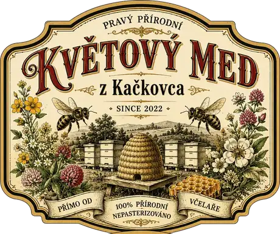
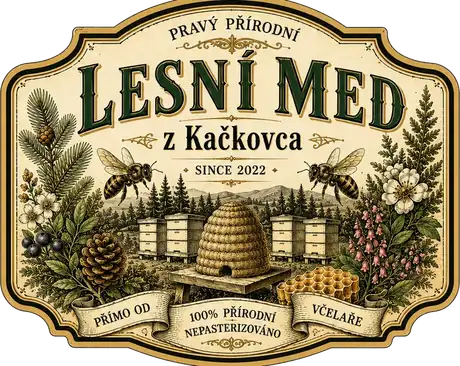
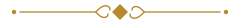

Květový med
Z lučních a zahradních květů v okolí Kačkovce – světlejší, jemný a sladší. Ideální do čaje, na pečivo i na lžičku.
- 250 g95 Kč
- 500 g180 Kč
- 1 kg340 Kč


Pravý přírodní med přímo od včelaře – z úlů u Ládovy maringotky na kraji lesa u Kačkovského potoka.
Pravý přírodní

Láda si místo u Kačkovce vybral v roce 2022 – ne kvůli výhledu, ale kvůli tomu, co roste kolem. Louky plné květů, smrky, jedle, akáty a lípy, a mezi nimi úzký pramen, kterému se tu odjakživa říká Kačkovský potok.
Přes sezónu bydlí v maringotce, pár metrů od úlů. Když se ráno probudí, první věc, kterou slyší, není budík, ale bzukot. Když prší, poslouchá kapky na plechové střeše a přemýšlí, jestli se všechny včely stihly vrátit domů.
Med se netočí podle kalendáře, ale podle počasí a snůšky. Někdy ho je málo, někdy víc – ale každý druh vždycky z jednoho místa a bez míchání šarží.


Nabídka
Oba medy jsou nepasterizované, neředěné a přímo z Ládových úlů. Vyberte si druh a sklenici, která vám vydrží tak akorát.
Z lučních a zahradních květů v okolí Kačkovce – světlejší, jemný a sladší. Ideální do čaje, na pečivo i na lžičku.
Ze smrků, jedlí a lesních porostů u Kačkovského potoka – tmavší, hustší a plnější, s typickou lesní chutí.
Ceny jsou orientační, podle aktuální snůšky se mohou v průběhu sezóny mírně měnit.
O medu
Žádný překupník ani velkoobchod. Láda med sám vytočí, nechá uležet, naplní do sklenic a předá vám ho osobně nebo pošle poštou.
Co vyteče z medometu, to skončí ve sklenici. Med se nezahřívá ani neředí, takže si zachová chuť i vůni, jakou mu daly včely.
Přírodní med časem zhoustne a zkrystalizuje – je to znak, že nebyl zahříván. Pokud ho chcete znovu tekutý, postavte sklenici do vlažné vodní lázně (do 40 °C) a nechte ho pomalu rozpustit.
Uzavřený, v suchu a ve tmě, ideálně při pokojové teplotě. Med nepatří do lednice ani na slunce. Dětem do jednoho roku se med nepodává.
Přímo od včelaře
Včely u Kačkovce pracují celou sezónu.
Láda jejich práci jen stočí do sklenic – a pošle ji až k vám.
Kontakty
Kačkovec, jižní Morava
u Kačkovského potoka
kontakt@doplnit.cz
+420 000 000 000
Doplňte prosím skutečný telefon a e-mail.

123456 7890 / 0300
Ukázkové číslo účtu – nahraďte skutečným účtem Lády.